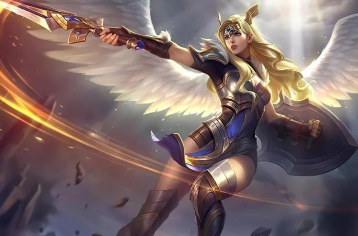

Freya

Menggunakan pedang dan tameng untuk bertarung, Freya berhasil mendapatkan gelar Pahlawan terkuat. Selain itu berkat wajahnya yang menawan, Freya juga termasuk sebagai Hero Mobile Legends tercantik. Di antara hero Mobile Legends dengan role Fighter yang brutal, terselip ada Freya sebagai EPX lane yang cantik.
5 Tips Menggunakan Freya di Mobile Legends
1. Pahami Terlebih Dulu Skill Milik Freya

2. Gunakan Item yang Tepat

Kalau kalian bingung item apa saja yang harus digunakan oleh Freya, kalian bisa mengikuti susunan item dari top player Freya. Namun kalau kalian sudah hafal efek setiap masing-masing item, kalian bisa menggunakan item sesuai dengan kondisi ditengah pertandingan.
3. Simpan Freya di Exp Lane

Tips berikutnya adalah dengan menempatkan Freya di Exp Lane. Sebenarnya Exp Lane ini bukan cuman untuk Freya saja, tapi Exp Lane ini bagus untuk semua hero Fighter. Soalnya di lane ini hero kalian akan lebih cepat naik levelnya
4. Tips Saat Tim Fight

Kemudian tips saat terjadinya tim fight. Jadi tim fight atau war merupakan kondisi yang sering kita dapatkan yang dimana semua anggota tim kita berperang melawan seluruh anggota tim lawan. Nah kalau momen ini terjadi dan kalian menggunakan Freya, kalian bisa sering-sering bersembunyi di semak-semak, tujuannya untuk menunggu hero lawan lewat dan mengeksekusinya.
5. Combo Skill Freya

Tips yang terakhir adalah gunakan combo skill Freya dengan benar. Perlu kalian catat, jadi rupanya ada combo skill supaya Freya milik kalian bisa membunuh lawan dengan cepat dan mudah, kalian tidak boleh asal pencet skill sembarangan.